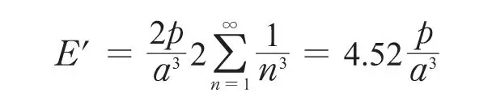
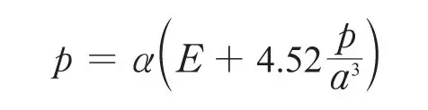
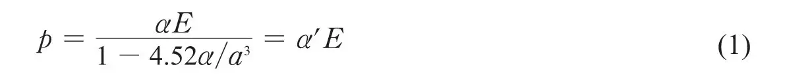
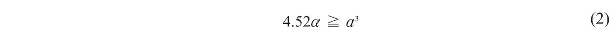
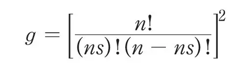
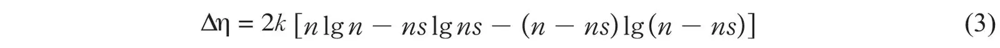
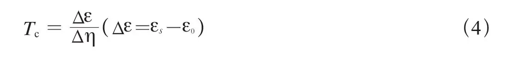
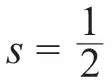
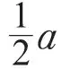
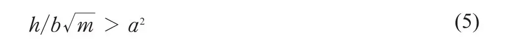

英文
英文弗伦克尔
编者按
超导电性涉及一个电阻突降为零的转变过程，而电阻为零似乎意味着一个无穷大的电导。但是在这篇文章中，俄国物理学家雅科夫·弗伦克尔则认为应该将介电常数视为无穷大，介电常数是表征材料由于极化引起的对电场响应程度的物理参数。虽然通常电流的形成就是电子自由通过材料的过程，但是如果由于电场导致的原子极化变为无穷大的话，也会产生“极化电流”。这样，电子可以在原子间跳跃，产生电子的一维链在原子晶格上滑移的相干运动。尽管弗伦克尔的这篇文章并没有解释清楚超导电性，但它确实促成了一个全新的想法：这一现象与载流子的相干运动存在某种联系。 英文
在描述金属的超导状态时，我们习惯于将金属的电导率σ定义为无穷大。我希望能够引导大家关注另外一种可能性，而这有可能是对超导状态更加合适的描述，即设物质的介电常数ε为无穷大，而电导率σ保持为有限值，甚至等于零。 英文
这个新定义的真正含义可以从普通电传导（σ为有限值）与普通电极化（ε为有限值）机制的比较中看出。就前者而言，电子可被看成是在独立地“自由”运动，传导电流是由外电场作用引起的漂移运动和单个电子无干扰的随机运动叠加而形成的。而对后者而言，受“束缚”的电子在电场的作用下沿同一方向同时产生位移，极化电流是由所有电子有序的集体运动产生的。一般情况下，电子相对于各自所属原子的位移比原子间的距离要小；这对应于介电常数是有限值的情形。如果我们假设介电常数的值为无穷大，那就代表，在无穷小电场的作用下，所有电子会同时移动一段有限的距离，每个电子连续地从一个原子穿越至下一个原子，就像一根链子在锯齿形的轨道上滑动一般。 英文
“束缚”电子的这类集体运动所形成的电流与自由电子的单个运动形成的电流大小相等，但它是极化电流，而不是传导电流。以类链方式集体运动的电子之间的静电相互作用会克服由晶格热运动引起的扰动，从而使电子的这种运动稳定下来，这使得在引发了该运动的电场消失后，极化电流还将一直持续[1]。这种电流的持续性曾经被错误地解释为是特定情况下电导率无穷大所致，而实际上应该用介电常数无穷大来进行解释。那么现在如何来解释介电常数无穷大的出现呢？事实上很简单，赫茨菲尔德已经想到了合适的机制，但是他并没有给出正确的解释。下面我们考虑由极化系数为α的等间距的原子组成的链。于是，在外场E 的作用下，单个原子的电偶极矩就为p = αE。如果电场E沿链的方向，则在计算某一个原子的极化时，我们必须加上由于其他所有原子的感生电偶极矩所产生的电场E'。假设所有这些电偶极矩都相等，我们得到

因此

所以

由此可见，对于α是一个有限值的单个原子来说，如果

我们得到原子链的有效极化系数α'的值为无穷大。 英文
（2）式中符号“>”相当于α'是负值，与符号“=”没有区别；在这两种情况下，原子链可以用与其相连的电子链的不稳定性来表征。赫茨菲尔德以前就注意到了这种不稳定性，他还把这种现象解释为是电子不再受到束缚，而成为自由“传导”电子这一事实的一个标志。因此不等式（2）一般被认为是金属态的特征。我相信这并不是金属态的特征，而是超导态的特征，超导体是一种具有可自由运动电子链（即ε = ∞）的电介质，而非金属本身。 英文
按照由斯莱特[2]发展出的定性的金属态理论，以及最近由舒宾[3]对该理论的改进和推广，金属的正常导电性是由于原子的部分电离引起的，某一部分原子s变成正离子，而相等的另一部分（携带相应电子的部分）变成负离子。如果这些电子受到的束缚很微弱，通常可以称其是“自由的”。金属的电导率等于由这些自由电子或负离子产生的电导率加上正离子或“空穴”产生的电导率之和。电传导的机制主要是一个电子从一个负离子单个地跳到附近的一个中性原子上（于是这个中性原子就转换成一个负离子），或从一个中性原子跳到一个正离子上，于是正离子就成为中性原子，充当“施主”的角色。半导体[4]中具有相同类型的电传导机制。金属和半导体的主要区别在于：前者在温度（T）达绝对零度时，s > 0；而后者在T = 0时，s = 0，且按照玻尔兹曼方程（s = ce–W/kT，其中W是电离能）s随着温度的上升而增大。 英文
从某种意义上来说，能够成为超导体的元素形成了一个过渡状态的元素组，常温下，它们是传导性能相对比较差的导体，类似于普通的半导体；然而它们的电导率与温度的变化关系又和典型的金属（负温度系数）相同。当考虑这些过渡状态的元素或者“半金属”元素时，我们必然会遇到一些电离分数s实际为常数的物质。它们的弱导电性可以用很小的s值来解释，也可以用单个电子很小的迁移率来解释（考虑到基科因和拉萨雷夫共同发现的霍尔效应与超导电性之间的关系，这似乎是一个更合适的选择）。在通常情况下，也就是温度在“转变温度”Tc以上时，这些物质不再是超导体，这一事实可以利用它们的介电常数为有限值来解释，这个有限值是由失去了传导电子的离子的极化率来决定的。对于当温度由T降至Tc之下时发生的相变的本质，我们可以简单地用以下两点假设进行解释：第一，在这个温度下，s突然由某一相当高的值突变为零；第二，相应的带着所有束缚电子的普通原子的极化系数α满足不等式（2）*。物质失去导电性（σ与s变为零），于是由金属转变为ε = ∞的介质，也就是变成了超导体。 英文
如果我们假设s=0的态比s>0的态所具有的能量小，那么s→0转变（即σ→0和ε→∞）所具有的必然性和陡峭特点就很好解释了。这样的结论可以从斯莱特尤其是从舒宾的计算中得到，这个计算显示：无论最低能级处于s=0对应能级之上或之下，极化（离子）态的最低能级都可能对应于有限的s值。从而我们很容易看出，即使在极低的温度下（几K量级），给定s值对应能带中连续能级的间距远小于kT。如果能带的总带宽也小于kT，那么就可以按式子k lgg来计算s>0的态的熵，其中g是整个能带的统计权重，即得到态s所有方式的数目。考虑n个原子间ns个电子（负离子）和ns个正空穴（正离子）所有可能的分布，我们得到：

因此，与0 → s转变相应的熵增加是

实际上，带宽的数量级是1电子伏，因此在温度处于转变点时，带宽至少是kT的一千倍。这将得到一个非常小的熵的增加量∆η。 英文
然而，只要∆η > 0，s = 0的态在低温下一定是稳定的，s > 0的态在更高的温度下也一定是稳定的。 英文
转变温度Tc由两个态的自由能相等决定，由下式给出：

取

（它可能是一个夸大值），根据（3）式计算∆η，我们得到∆η=1.7kn。假设T = 4 K，则转变能∆ε应是每克原子14卡的量级。如果在考虑的范围内能带的带宽比nT大，那么这个值会大幅度降低，其有效权重会相应地比g小。 英文
于是，我们发现，超导电性的第二个条件应该表示为在T=0时满足不等式εs>ε0。但这还不是全部。只要电子的类链位移x小于原子间距α，（1）式就是一个很好的近似。当x约等于

时，电子则被一个力推回去，这个力比x的一次幂变化更快，并能被量子机制的隧道效应所克服。如果大量电子N以类链方式整体运动，它们就犹如具有N倍质量的一个粒子一样，转变概率将显著下降。克罗尼格[5]在他的第二个超导理论中已指出，电子链（他所说的“线形晶格”）以准弹性方式彼此束缚，在满足条件（5）式的情况下可以通过力的周期场（周期α等于电子之间的平均距离）。
式中，h是普朗克常数，m是电子质量，b是“电子晶格”的刚性系数。令b = τe/α3/2，其中τ是一个量级为1的系数，克罗尼格发现，如果α的量级小于几埃，则条件（5）式是满足的。这似乎表明，当限制性更强的条件（2）式也满足时，“线性晶格”即电子链相对于相应的原子链实际上总是可运动的。实际上，后一条件似乎是能否将（束缚）电子当作一种晶格来处理的可能性的数学描述。我并不认为，克罗尼格在他的第一篇文章中假设的三维晶格是真实存在的。他自己也表明，这类晶格即使存在也不能穿过离子晶格。事实上，一维晶格或可运动的束缚电子链完全可以解释超导电性。这类链并不需要在所有方向上都能运动。它们只要做如下的假设就足够了，即它们在一个特殊的晶体学方向上应该是可运动的，这个特殊方向对应于原子间的距离最小，而且介电常数在这个方向上为无穷大，而在其他方向上总保持一个有限值。 英文
克罗尼格的理论虽然存在不足，但它确实是迄今发表的对超导电性最接近正确的解释，我的理论与其的差别更多是在形式上，而非本质上的。我以前提出的基于假设在电磁作用下自由电子（相对于热运动）的稳定性的理论在这个特定方面是完全错误的。但是，在将超导态中电子的运动描述为有组织的“集体”运动这点是正确的。这就要求金属在这种态下必须具有巨大的抗磁性的磁化率。这个推论在新理论中成立，而且被迈斯纳最近发现的事实所证实，迈斯纳的实验显示金属的磁导率µ在超导态中会下降到零。因此超导体可以被表述为µ = 0和ε = ∞的物体，更确切地说，其电导率σ或者是一个有限值，或者就是零。 英文
这一理论更完整的叙述将在其他地方发表。 英文
（沈乃澂 翻译；郑东宁 审稿）
* 这个不等式几乎对所有金属来说都是成立的，尽管并不是所有的金属都是超导体，因为对于真正的金属而言，在温度下降到绝对零度的过程中，s将保持一个有限值（实际上是常数），然而对超导体而言，它会跳跃成为比先前略大的一个有限值。